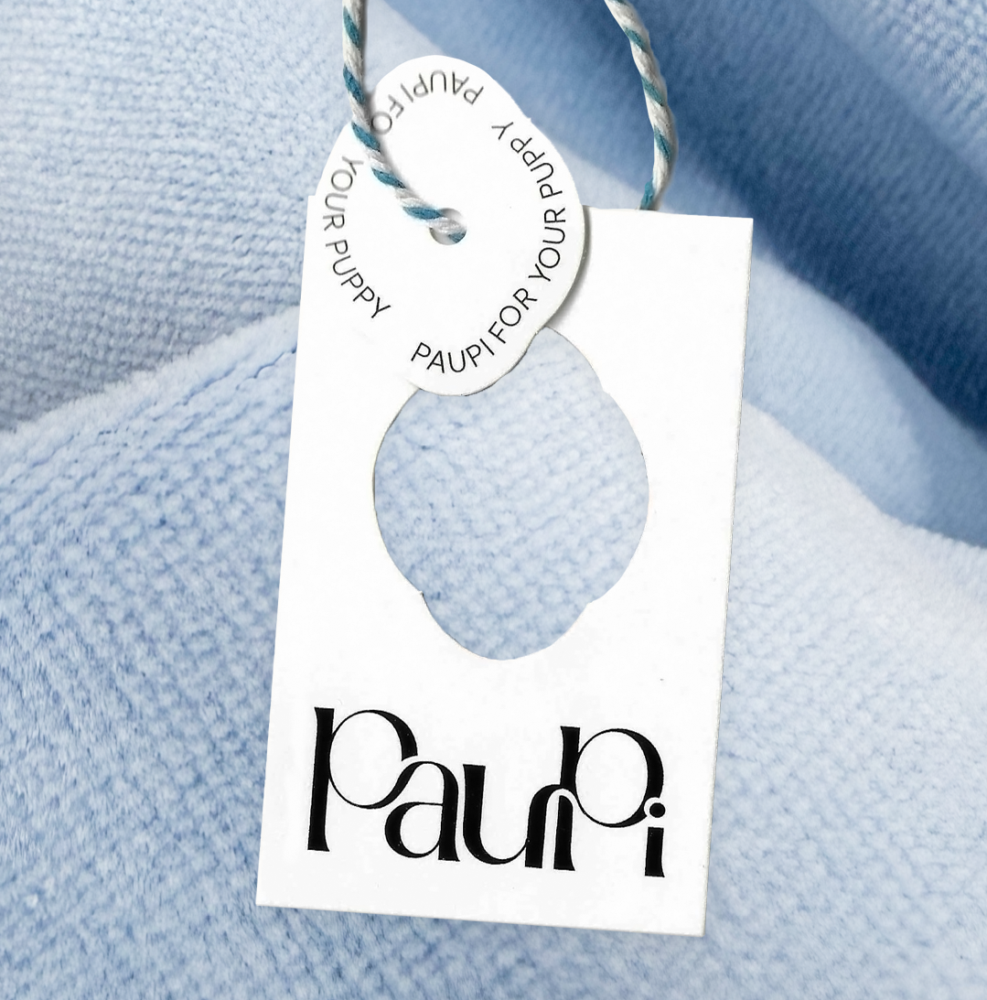
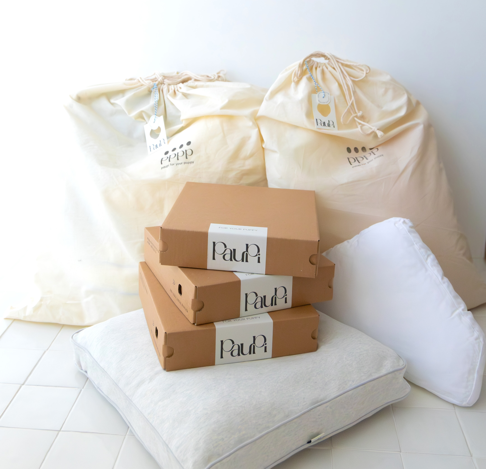
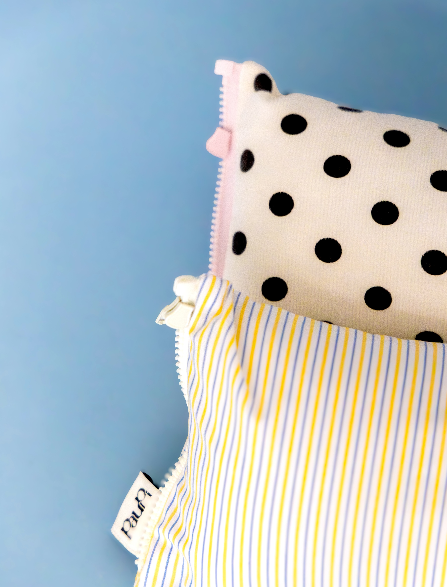
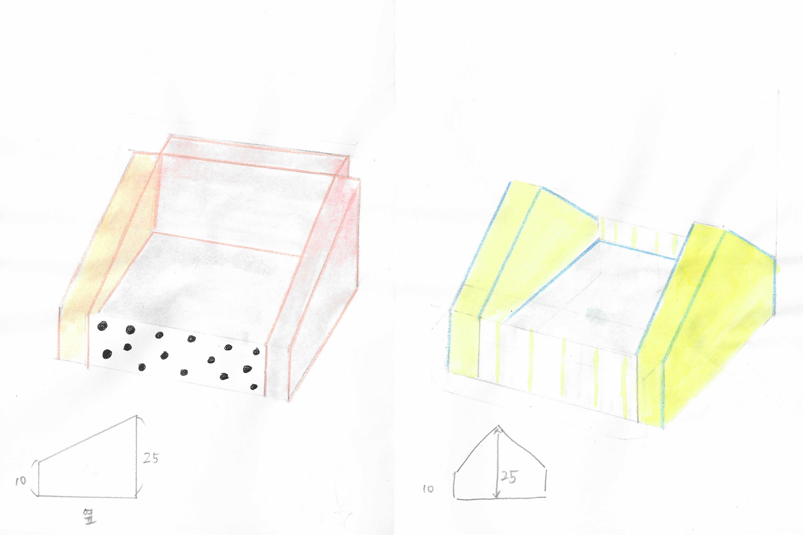
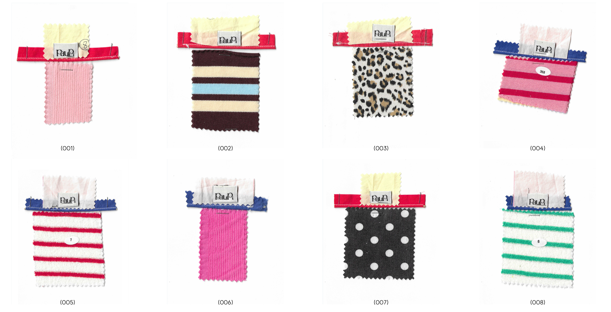
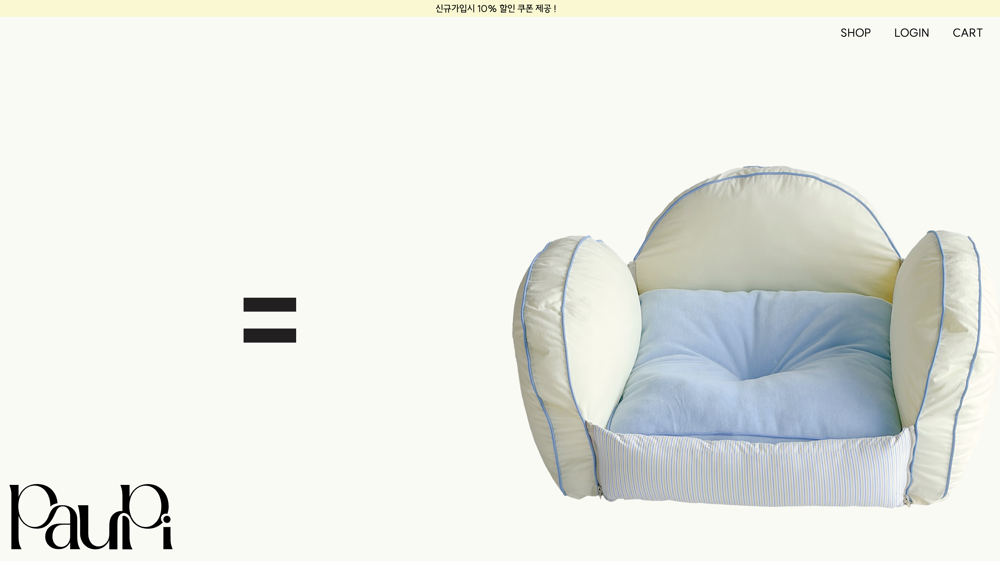
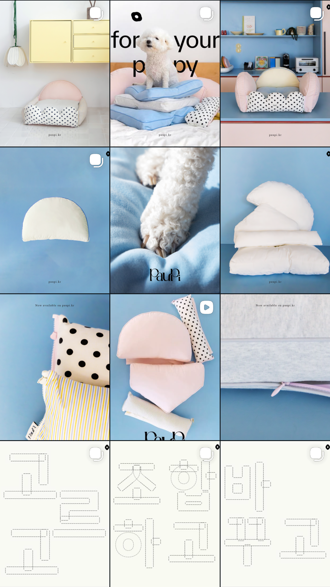

Paupi
Brand · Product design
The name Paupi comes from a wordplay between poppy and puppy.
It reflects the brand idea of “flowers gifted to pets,” and together with the slogan “paupi for your puppy,” it conveys the brand’s tone and rhythm in an immediate and memorable way.
Paupi aims to expand the act of choosing a product into a sensory experience.
Touching, comparing, and selecting fabrics is an essential part of the brand journey. To support this tactile approach, fabric swatches are included on the packaging hangtag, allowing users to physically engage with the materials before use.
The Paupi wordmark was designed to echo the curved silhouette of a poppy flower and the idea of a ribbon wrapping a gift. The prominent shape of the letter P emphasizes the repetition of the “p” sound, highlighting the playful character of the brand while visually expressing the rhythm embedded in its name.
The pet product market has largely been polarized into two dominant styles: cute, kitsch-driven designs and neutral, monochrome minimalism. Between these extremes, there have been very few options for those with different aesthetic preferences.
Pet beds are also long-term objects, yet most products are designed to be fully replaced rather than adapted over time. Paupi began by addressing this gap and established modularity as a core concept.
Instead of replacing the entire bed, the system allows covers to be swapped and components to be expanded over time. Customers can select and combine elements, enabling the product to continuously evolve alongside the user’s living space.
As the modular structure and interchangeable covers became central to the design, textiles naturally emerged as a key element of the brand.
Extensive textile research was conducted through material testing and experimentation with different fabric combinations.
The website was designed to reinforce the brand name and clearly communicate the product structure through a spacious, cut-out product–focused interface.
A horizontal scrolling experience reveals each component step by step, intuitively explaining the modular system.









